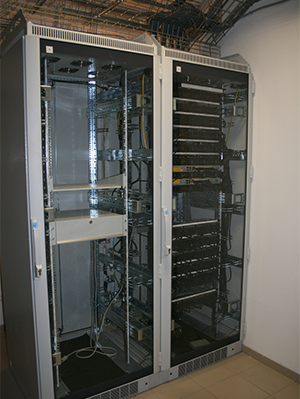
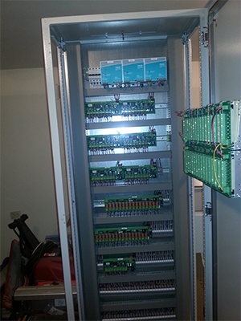
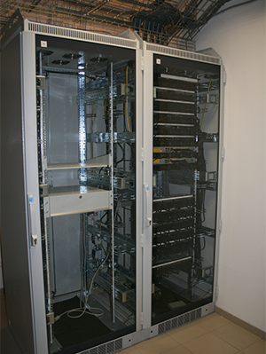
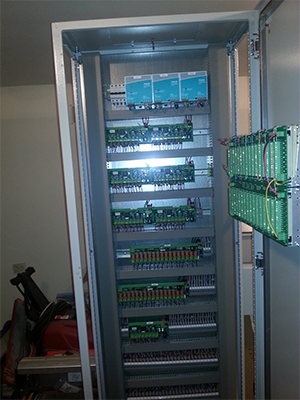

Структурированная кабельная сеть, объединяющая в единую инфраструктуру рабочие места пользователей и оборудование, стала неотъемлемой частью корпоративных коммуникаций. Являясь средой передачи данных, она служит для поддержки различных информационных сервисов, включая локальные вычислительные сети, телефонные линии, системы безопасности/контроля доступа и видеонаблюдения. К традиционным устройствам, подключаемым к СКС, — рабочим станциям локальной сети и телефонам — добавились различные контроллеры систем автоматизации здания.
Наша компания накопила богатый опыт по монтажу подобных систем. Наши специалисты спроектируют систему СКС согласно потребностям и пожеланиям Заказчика, проложат кабельные трассы, подберут и смонтируют необходимое оборудование в серверных и кроссовых комнатах, проведут пусконаладочные работы. По истечении гарантийного срока эксплуатации мы предлагаем своим Заказчикам послегарантийное обслуживание.
Компания РСУ Монолит является сертифицированным партнером компании Siemon, что позволяет нам предлагать нашим Заказчикам расширенную пятнадцатилетнею фирменную гарантию производителя на инсталлированные сегменты СКС Siemon.
 


